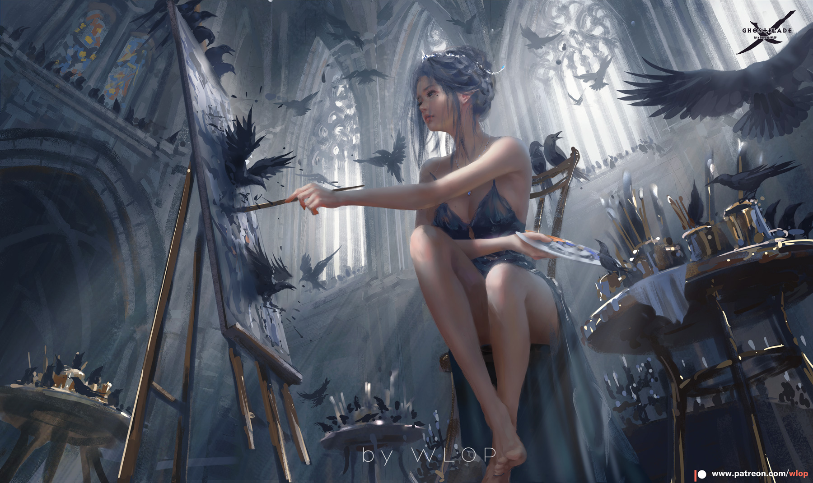
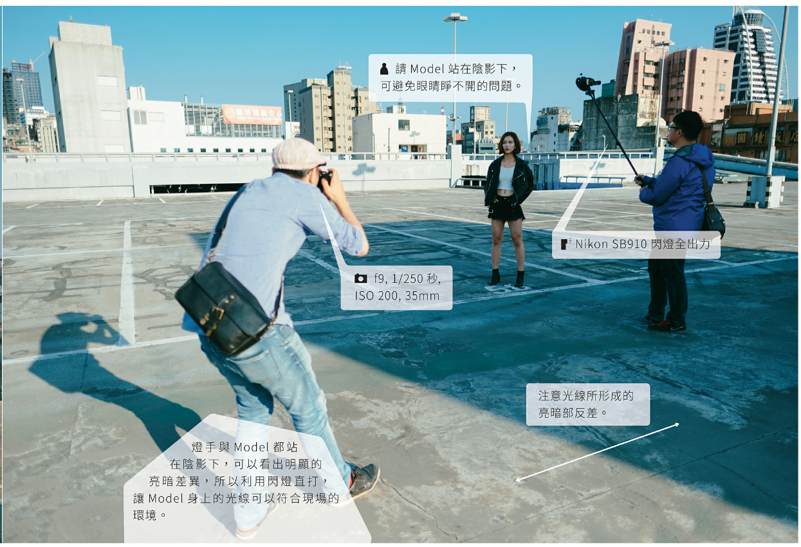
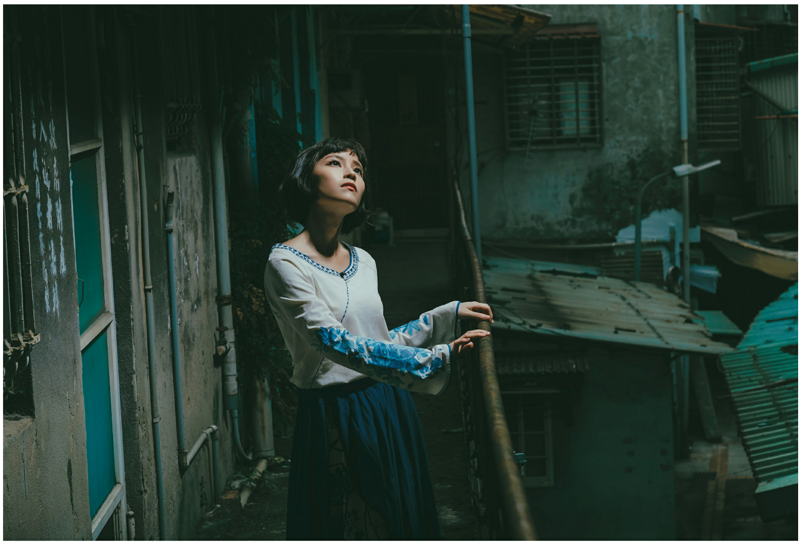

aliases:
- Practical Lighting
- 實際燈源參考影片
- 什麼是現場光源
- 從走位(空間)開始思考
- 尋找你的光源
- 自然的打光
- 可見燈源意思是利用現場光源進行打光，不使用電影燈光設備
- 強化原有的光源，而不是從零開始創造光源
- 任何在畫面中發光的物體就是可見燈源
- 日光也是一種可見燈源
- 能知道光源在哪裡，打光才是合理的，讓光線處於真實的一部份
練習方法
看圖找光源，辨識現場光源，思考光源在空間的合理性。

參考影片
硬光 vs 柔光

延伸閱讀
參考影片
- 不管燈光放在被攝主體的哪一側，相機必須放在另一側。
- 電影裡幾乎所有鏡頭都是從暗面拍攝
- 提供戲劇化的氛圍、增加角色立體度
陰影處拍攝

![「夏」「wlop」のイラスト [pixiv].jpg](lib/media/「夏」「wlop」のイラスト-[pixiv].jpg)
順光拍攝


大面積順光拍攝?

tags:
- 景深
- 情緒
- 對比
- 時間參考影片
- 電影中常常使用兩種顏色進行拍攝。這種拍攝方式可以創造出一個有故事性的色彩世界,
- 在電影中使用兩種顏色的優勢之一是可以更好地呈現人物的膚色,使其看起來更加自然
- 不同顏色對情緒和氛圍的影響,
- 以及電影製作中找到對立或和諧的兩種顏色,以增加深度。
呈現膚色
改變情緒
改變景深


--- 對照組 ---
--- 對照組 ---
--- 對照組 ---

製造對比
改變時間
aliases:
- Motivated Lighting
- 擬似光參考影片
- 模擬光與場景燈光相反，在實際拍攝現場並不存在
- 人為模擬合乎邏輯的燈光
- 場景光是模擬光的引子，亦即光源依據
一些動漫例子
延伸閱讀
text: "[[模擬打光]]"
cssclasses:
- cards攝影者、被攝者、光線的位置三重奏
我們現在再簡單的複習一次前一章節提到的,光線與被攝體之間位置的變換。只要改變燈具擺放的位置,就能創造出完全不同的感覺。比較這兩種燈光,除了氛圍不同外,也可以發現圖b比起圖a來說,更具瘦臉的效果。在拍攝臉蛋比較的人時,如果想要修飾這個部分,一種是靠後製液化把人的臉修瘦,或是利用光線所產生的陰影,創造視覺上的削瘦。
當自己在練習拍攝,沒有助手幫忙的時候比較好的做法是先測光,測到你想要的閃燈強度後,就把閃燈留在那個位置,接著請Mode|移動他的臉,最後,你再試著去移動步伐,尋找到想要的構圖。
找硬光帶出立體感
硬光就是一般晴天的光線,打在景物上會產生很明顯的影子,影子的形狀也會很清楚。硬光屬於直射光,只要是被硬光照射到物體,都會產生鮮明的輪廓,或者是說反差,隨太陽角度的不同,會有很大的差異。街頭拍攝通常會特別喜歡硬光的環境,影子是構成影像重要的一環,許多有趣的畫面幾乎都是透過與影子結合而產生,所以我在街拍時,也會特別注意這樣的情境光線。
利用距離平方反比
在有光線的地方補光
利用窗光補光
自製光斑
門光
模擬夕陽

自然光沒辦法應付所有場合
模擬日光

補光的邏輯性
建築物結構

街燈的規律
從天而降頂光
把燈舉高的機會很多,舉凡樹林、巷弄、或是室內等等,因為模擬陽光或室內燈光,讓光線由上而下成了許多時候最合理的光線方向。就像頂光那樣,我會請被拍攝的對象,適當地調整下巴的角度,來控制臉上陰影的分佈。

濃霧中使用輪廓光
雖然在濃中,運用柔光補光很合理,但也不代表完全不能用裸燈(硬光)補光。在後面的照片中,我請大毛站在比較遠的地方,透過閃燈直打,讓笑笑身上帶一道明顯的亮光,這就像我們在棚裡,或是在夜景利用閃燈勾邊。從我的角度來看,這樣的影像是突兀的,因為沒道理在這樣的天氣中會有一道光從側面撞過來,不過這的確是許多商業攝影會用的方式。雖是低光源的環境,但均勻的亮度狀態,反而可以將低對比的環境作為很好的背景,恣意地利用閃燈勾勒主體,讓主體自動在環境中凸顯出來。
觀察所在的環境,選出合理的光線行徑方向。
髮絲光與街燈
由於亞洲人普遍黑髮,相對於其他人種比較透光的髮色來說,
在夜景拍攝的時候,如果頭髮完全沒有吃到光線,很容易就會一團黑。

調節現場環境氛圍
假設只利用一支燈,想要呈現不同的氛圍,很簡單的做法就是到街上去拍攝,熱鬧的街上自然會有許多燈光,利用街上的燈光,讓主體身上染上其他光線的顏色,創造出不一樣的畫面。可以試著調整主體跟環境光線的比例,讓主體身上的光線差不多就是環境亮度,同時環境中的光與你補的光會有一種奇妙的交互作用,互相影響卻又不干擾。


tags:
- 光源位置參考影片
如何拍摄眼神光的正确姿势。眼神光是通过光线在眼睛中反射形成的,可以通过放置灯光或反射板来实现。不同的眼神光方式可以塑造不同的人物性格,井传达不同的情绪。眼神光可以是锐利的远光或柔和的点光源光,也可以是隐藏在阴影中的眼神光。在电影中,眼神光可以突出人物的情感和情绪,因此在拍摄时需要构思好灯光的安排。
遠光點光源
光比較小，顯得眼神銳利


大面積柔光


暗示命運
對照組


![「lion」「wlop」のイラスト [pixiv].jpg](lib/media/「lion」「wlop」のイラスト-[pixiv].jpg)
tags:
- 光源位置
cssclasses:
- img-zoom
- img-grid超凡

氛圍

曖昧不明

實體感
感情